필드 그룹
GROUP · 흩어진 필드를 한 묶음으로 모으는 틀
필드 그룹이란
- 1.1필드 추가와 속성 패널 구성
1.1필드 추가와 속성 패널 구성
개요
필드 그룹(GROUP) 은 흩어져 있는 필드를 한 묶음으로 모으는 틀입니다. 활력징후처럼 함께 읽어야 뜻이 통하는 항목들을 한 상자 안에 넣어 보여 줍니다. 다른 타입과 가장 크게 다른 점은 새 칸을 만들지 않는다는 것입니다 — 폼에 이미 있는 필드를 골라 그룹 안으로 옮기는 방식입니다. 3장 그래서 그룹은 값을 직접 담지 않고, 값은 각 멤버가 그대로 가지고 있습니다.
화면 설명
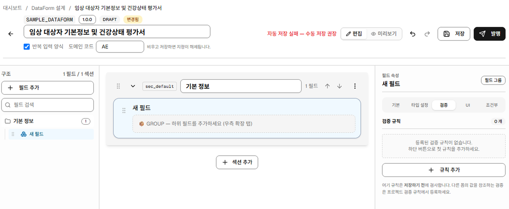
[+ 필드 추가] — 여기에서 타입을 지정하면 필드가 생성됩니다.
구조 트리에 새 필드가 추가됩니다. 아이콘이 묶음 모양입니다.
WYSIWYG 캔버스에는 상자 대신 안내만 표시됩니다 — “GROUP — 하위 필드를 추가하세요 (우측 확장 탭)”. 멤버가 0개이기 때문입니다. 3.1
타입 배지 「필드 그룹」 — 선택한 필드의 타입입니다. 추가한 뒤에는 변경할 수 없습니다.
속성 탭 5종 — 기본 · 타입 설정 · 검증 · UI · 조건부. 이 매뉴얼 2~6장이 각 탭에 대응합니다.
⚠ 이 캡처는 「검증」 탭이 열린 상태입니다. 기본 탭 항목(fieldKey · 표시명 · 필수 입력 · SDV)은 2장에서 다룹니다. 참고로 기본 탭에는 다른 타입에 있는 AE 의미 역할과 미측정 선언 허용이 표시되지 않습니다 — 그룹은 값을 담지 않아 그 두 기능이 성립하지 않기 때문입니다. 7.2
유의사항
필수 확인 데이터 손상 · 폼 완료 불가
- • ⛔ 멤버를 넣지 않으면 이 필드는 아무 쓸모가 없습니다. 캔버스에 상자가 보이지 않는 것이 그 상태입니다 — 반드시 타입 설정 탭에서 필드를 넣으십시오. 3장
오해하기 쉬운 동작
- • 그룹은 값을 담지 않습니다. 값은 멤버가 각자 가지고 있고, 그룹은 묶어 보여 주는 역할만 합니다. 그래서 추출 자료에도 멤버가 각각 독립된 항목으로 나옵니다. 4.3
- • 먼저 필드를 만들고 나중에 묶습니다. 그룹을 먼저 만들어도 넣을 필드가 없으면 아무것도 할 수 없으므로, 묶을 항목들을 먼저 추가하십시오. 3.1
참고
- • 캔버스 왼쪽의 주황색 막대는 “저장 전 변경됨” 표시입니다. 그룹 후보를 가리키는 것이 아니며, 저장하면 사라집니다.
기본 탭 — 이름 · 필수 · 검증 대상
- 2.1fieldKey · 표시명 · 도움말
- 2.2필수 입력
- 2.3SDV 검증 대상 (CRA 원자료 대조)
2.1fieldKey · 표시명 · 도움말
개요
그룹의 이름을 정하는 영역입니다. 저장 키(fieldKey)와 화면에 표시되는 이름(label)은 서로 다른 값입니다. 그룹의 표시명은 상자의 제목이 되므로, 안에 무엇이 묶여 있는지 한눈에 드러나게 적으십시오.
화면 설명
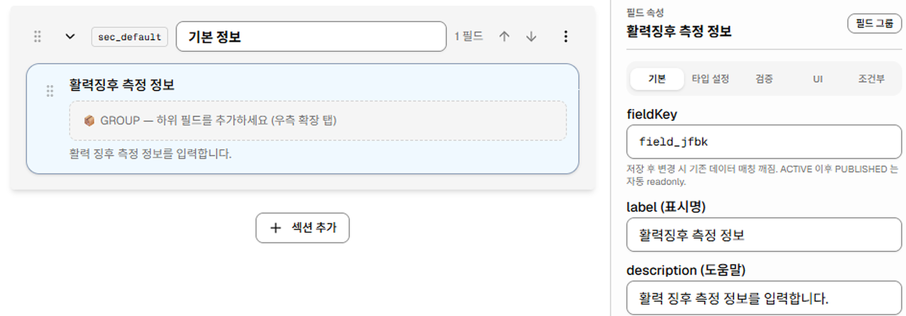
label (표시명) — 상자 위에 표시할 제목을 입력합니다. 캡처는 활력징후 측정 정보 입니다.
캔버스 상자 제목으로 표시됩니다. 멤버 각자의 이름과는 다른 층입니다 — 멤버 이름은 각 멤버의 기본 탭에서 따로 정합니다. 3.3
description (도움말) — 상자 아래에 표시할 보조 설명을 입력합니다. 공란으로 두면 표시되지 않습니다.
상자 아래 회색 글씨로 표시됩니다. 캡처는 “활력 징후 측정 정보를 입력합니다.” 입니다.
fieldKey — 그룹의 키입니다. field_jfbk 처럼 자동으로 부여되며, ⚠ 그룹의 키에는 값이 저장되지 않습니다 — 값은 멤버의 키에 각각 저장됩니다. 4.3
유의사항
필수 확인 데이터 손상 · 폼 완료 불가
- • 묶음의 기준을 표시명에 밝히십시오. 「측정 정보」 만으로는 무엇을 언제 잰 것인지 알 수 없습니다 — 상자 제목이 곧 그 묶음의 뜻입니다.
- • 멤버 전체에 해당하는 안내만 도움말에 적으십시오. 특정 항목에만 해당하는 설명은 그 멤버 자신의 도움말에 적어야 합니다 — 그룹 도움말은 상자 전체에 붙습니다. 5.4
오해하기 쉬운 동작
- • 그룹의 fieldKey 는 값과 무관합니다. 다만 조건부 표시6장와 그룹 간 참조에 쓰이므로 저장한 뒤에는 변경하지 마십시오.
- • 표시명(label)은 언제든 변경할 수 있습니다. 저장된 값에는 영향을 주지 않습니다.
2.2필수 입력
개요
이 그룹을 반드시 채워야 폼을 완료할 수 있게 할지 정합니다. ⚠ 테이블형과 작동이 다릅니다. 테이블형은 컬럼 필수가 표 전체를 필수로 끌어올리지만, 그룹은 멤버의 필수와 서로 독립입니다 — 멤버의 필수는 그 멤버 자신의 속성으로 따로 집계됩니다.
화면 설명
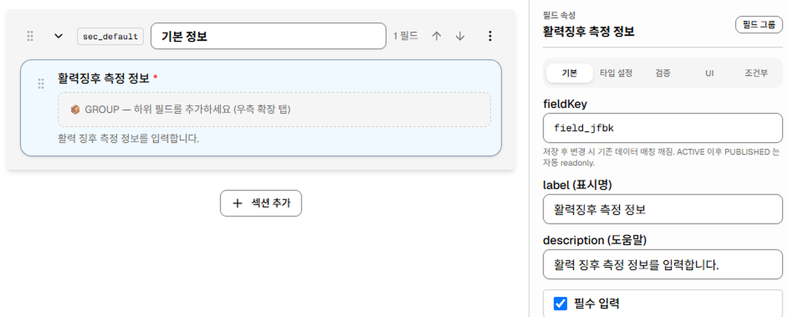
* 가 표시된다필수 입력 — 선택하면 이 그룹이 필수 항목이 됩니다. 멤버 가운데 하나도 채워지지 않으면 폼을 완료할 수 없습니다.
캔버스 상자 제목 오른쪽에 빨간 * 가 표시됩니다. 멤버마다 붙는 별은 각 멤버의 기본 탭에서 따로 정합니다.
label · description — 2.1 에서 입력한 값이 그대로 표시됩니다.
유의사항
필수 확인 데이터 손상 · 폼 완료 불가
- • ⛔ 그룹 필수와 멤버 필수를 혼동하지 마십시오. 그룹을 필수로 두어도 멤버 하나만 채우면 그룹은 충족됩니다. 멤버마다 반드시 받아야 한다면 각 멤버에서 필수를 켜야 합니다.
- • ⛔ 반대로 그룹 필수를 꺼도 멤버 필수는 그대로 살아 있습니다. 멤버는 독립된 필드라 자기 필수 설정이 그대로 집계됩니다 — 테이블형처럼 컨테이너를 꺼서 통째로 건너뛸 수 없습니다. 7.1
- • 그룹을 조건부로 숨기면 멤버도 함께 숨고, 필수 검사에서 제외됩니다. 6.1
오해하기 쉬운 동작
- • 대부분의 경우 그룹 필수는 필요하지 않습니다. 받아야 하는 항목이 정해져 있다면 그 멤버에서 필수를 켜는 편이 뜻이 분명합니다.
2.3SDV 검증 대상 (CRA 원자료 대조)
개요
SDV(Source Data Verification) 는 임상연구모니터요원(CRA)이 입력값을 의료기관 원자료와 대조하는 절차입니다. 이 설정은 모든 필드 타입에서 동일하므로 화면도 타입과 무관하게 같습니다. 다만 그룹에 지정하는 것은 권하지 않습니다 — 아래 유의사항을 읽으십시오.
화면 설명


SDV 검증 대상 (CRA 원자료 대조) — 선택하면 이 필드가 CRA 의 대조 목록에 포함됩니다.
선택 상태로 바뀌면서 하위 항목이 활성화됩니다.
검증 필수 (미검증 시 품질 PENDING) — ①을 선택한 뒤에야 지정할 수 있습니다. 선택하면 CRA 가 대조를 마치기 전까지 해당 데이터의 품질 상태가 PENDING 에 머무릅니다.
①을 선택하기 전에는 ②가 흐리게 비활성입니다. 화면 안내와 같이 “검증 대상으로 지정해야 필수 여부를 정할 수 있습니다.”
유의사항
필수 확인 데이터 손상 · 폼 완료 불가
- • ⛔ SDV 는 그룹이 아니라 멤버에 지정하십시오. 그룹 자체에는 값이 없어 대조할 대상이 없습니다 — 실제로 원자료와 맞춰 볼 값은 평균 동맥압 · 맥압 같은 멤버가 가지고 있습니다. 1.1
- • ⛔ 그룹에 켜 두면 멤버에 켠 것으로 착각하기 쉽습니다. 멤버는 독립된 필드라 그룹 설정이 멤버로 내려가지 않습니다 — 멤버마다 따로 켜야 합니다.
오해하기 쉬운 동작
- • SDV 는 입력한 사람이 직접 수행할 수 없습니다. 시스템이 교차 검증(Cross-User SoD)을 강제하므로 입력자와 검증자는 반드시 달라야 합니다.
참고
- • 품질 상태는 PENDING → VERIFIED → CLEAN 순으로 진행됩니다. 검증 필수로 지정한 필드가 하나라도 미검증이면 해당 데이터는 CLEAN 이 되지 못합니다.
타입 설정 탭 — 멤버 구성 (이 타입의 중심)
- 3.1멤버가 없는 처음 상태
- 3.2그룹에 넣을 필드 고르기
- 3.3추가 결과 — 필드가 그룹 안으로 이동한다
- 3.4행당 항목 수 (itemsPerRow)
3.1멤버가 없는 처음 상태
개요
필드 그룹에서 가장 중요한 탭입니다. 설정은 둘뿐입니다 — 한 행에 몇 개씩 늘어놓을지(행당 항목 수)와, 어떤 필드를 묶을지(멤버 피커). 캡처는 폼에 「평균 동맥압(MAP)」 과 「맥압」 두 필드를 먼저 만들어 둔 상태입니다 — 그룹은 그 둘을 새로 만드는 것이 아니라 가져오는 것이기 때문입니다.
화면 설명
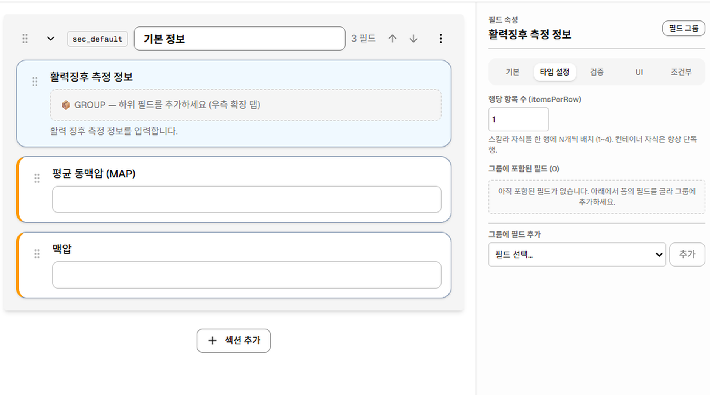
행당 항목 수 (itemsPerRow) — 상자 안에서 멤버를 한 행에 몇 개씩 배치할지 정합니다. 1~4 중에서 고르며 처음에는 1 입니다. 3.4
그룹에 필드 추가 — 폼에 있는 필드를 골라 그룹에 넣습니다. 3.2
[추가] — ②에서 고른 필드를 그룹 안으로 옮깁니다. 3.3
그룹에 포함된 필드 (0) — 멤버 목록입니다. 처음에는 “아직 포함된 필드가 없습니다. 아래에서 폼의 필드를 골라 그룹에 추가하세요.” 안내가 표시됩니다.
행당 항목 수 안내 — “스칼라 자식을 한 행에 N개씩 배치 (1~4). 컨테이너 자식은 항상 단독 행.” 표나 다른 그룹을 멤버로 넣으면 그 멤버만 한 줄을 통째로 씁니다.
「평균 동맥압 (MAP)」 과 「맥압」 이 아직 그룹 밖에 독립된 필드로 놓여 있습니다. 이 둘이 ②의 후보입니다.
타입 배지 「필드 그룹」 — 설정 중인 필드의 타입입니다.
유의사항
필수 확인 데이터 손상 · 폼 완료 불가
- • ⛔ 묶을 필드를 먼저 만들어야 합니다. 폼에 다른 필드가 없으면 피커에 “추가할 수 있는 필드가 없습니다. 먼저 폼에 필드를 추가하세요.” 만 표시되고 아무것도 할 수 없습니다. 1.1
오해하기 쉬운 동작
- • 기본값(defaultValue) 항목이 없습니다. 그룹은 값을 담지 않으므로 미리 채워 둘 대상이 없습니다 — 기본값이 필요하면 멤버에 지정하십시오. 7.2
- • 자동 계산(calculation) 항목도 없습니다. 묶음 전체를 하나의 수치로 산출하는 것은 성립하지 않습니다. 계산이 필요하면 숫자 멤버에 거십시오. 7.2
- • 그룹 안에 그룹을 넣을 수 있습니다. 다만 3중 중첩까지이며, 한도를 넘는 후보는 피커에서 선택할 수 없고 “— 중첩 깊이 한도 초과” 사유가 붙습니다. 3.2
3.2그룹에 넣을 필드 고르기
개요
피커에서 그룹에 넣을 필드를 하나 고릅니다. 목록에는 폼의 최상위 필드가 이름과 타입과 함께 나옵니다. 고르기만 해서는 아무 일도 일어나지 않고, [추가] 를 눌러야 실제로 옮겨집니다. 3.3 한 번에 하나씩만 고를 수 있으므로 멤버 수만큼 반복합니다.
화면 설명
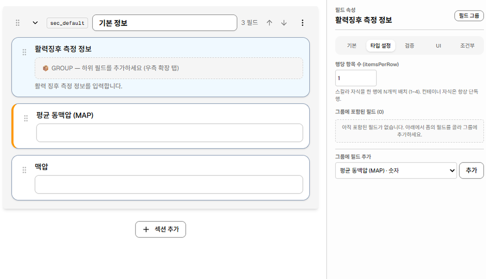
평균 동맥압 (MAP) · 숫자 를 고른 상태 — 아직 옮겨지지 않았다그룹에 필드 추가 — 캡처는 평균 동맥압 (MAP) · 숫자 를 골랐습니다. 목록 항목은 표시명 · 타입 형식이라 같은 이름이 여럿이어도 구별됩니다.
[추가] — 선택 전에는 흐리게 비활성이고, 고른 뒤에 눌러야 그룹 안으로 옮겨집니다. 3.3
캔버스는 아직 그대로입니다. 「평균 동맥압 (MAP)」 은 여전히 그룹 밖에 있습니다 — 피커에서 고른 것만으로는 옮겨지지 않습니다.
그룹에 포함된 필드 (0) — 아직 0건입니다.
유의사항
필수 확인 데이터 손상 · 폼 완료 불가
- • ⛔ 중첩 깊이 한도를 넘는 그룹은 고를 수 없습니다. 목록에 “— 중첩 깊이 한도 초과” 가 붙어 비활성으로 표시됩니다 — 숨기지 않고 사유를 보여 주므로 왜 안 되는지 그 자리에서 확인할 수 있습니다. 3.1
오해하기 쉬운 동작
- • 목록에 보이는 것은 최상위 필드뿐입니다. 표(테이블형)의 컬럼은 표 안에만 있는 항목이라 목록에 나오지 않습니다 — 그룹으로 묶을 수 없습니다. 7.2
- • 섹션 헤더와 이름이 비어 있는 필드도 제외됩니다. 이름이 없는 필드를 넣으려면 먼저 그 필드에 표시명을 지정하십시오. 2.1
참고
- • 순서는 나중에 바꿀 수 있습니다. 넣는 순서가 곧 표시 순서가 되지만 멤버 목록의 ∧ ∨ 로 조정할 수 있습니다. 3.3
3.3추가 결과 — 필드가 그룹 안으로 이동한다
개요
이 쪽이 필드 그룹의 핵심입니다. [추가] 를 누르면 그 필드는 복사되는 것이 아니라 옮겨집니다 — 최상위에서 빠져 그룹 안으로 들어갑니다. 그래서 구조 트리의 필드 수가 하나 줄어들고, 그 필드는 그룹 아래에 한 단 들여써서 표시됩니다.
화면 설명
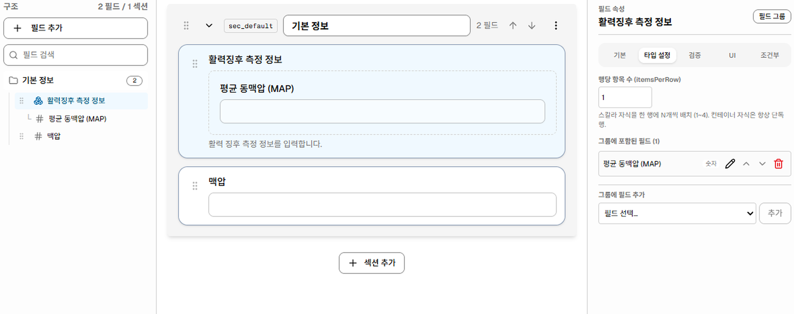
멤버 목록에 1건이 추가되었습니다. 표시명과 함께 타입 배지(숫자) 가 붙습니다.
구조 트리에서 「평균 동맥압 (MAP)」 이 그룹 아래로 들여써집니다. 더 이상 최상위 필드가 아닙니다.
캔버스에서도 그 필드가 상자 안으로 들어갑니다. 「맥압」 은 아직 밖에 남아 있습니다.
멤버 조작 아이콘 3종 — 왼쪽부터 ✏ 편집 · ∧ ∨ 순서 · 🗑 입니다. 연필은 그 멤버의 속성 패널로 이동해 멤버 자신의 이름 · 필수 · 검증을 설정하게 하고, 화살표는 멤버 순서를 바꿉니다. ⚠ 🗑 는 삭제가 아니라 「그룹에서 빼기」 입니다 — 누르면 그 필드는 최상위로 되돌아갈 뿐 사라지지 않고 값도 그대로 남습니다.
그룹에 포함된 필드 (1) — 건수가 0에서 1로 바뀌었습니다.
최상위 필드 수가 3에서 2로 줄었습니다. 멤버는 그룹 안으로 옮겨 갔기 때문입니다.
피커가 「필드 선택…」 으로 되돌아가고 방금 넣은 필드는 후보에서 빠집니다. 남은 「맥압」 을 넣으려면 같은 절차를 한 번 더 반복합니다.
유의사항
필수 확인 데이터 손상 · 폼 완료 불가
- • ⛔ 🗑 를 삭제로 오해하지 마십시오. 그룹에서 빼는 것일 뿐 필드도 값도 사라지지 않습니다. 필드를 정말 지우려면 그 필드를 선택해 삭제해야 합니다.
- • 그룹을 삭제하면 멤버는 어떻게 되는지 먼저 확인하십시오. 묶음만 풀 생각이라면 멤버를 하나씩 🗑 로 빼낸 뒤 빈 그룹을 삭제하는 편이 안전합니다.
오해하기 쉬운 동작
- • 멤버는 여전히 독립된 필드입니다. 그룹 안으로 옮겨도 자기 fieldKey · 필수 · 검증을 그대로 가지고 있어, 검증 규칙과 조건부에서 직접 참조할 수 있습니다. 표(테이블형)의 컬럼과 결정적으로 다른 점입니다. 4.3 · 7.1
- • 멤버의 설정은 멤버에서 합니다. 그룹 속성 패널에는 멤버의 필수나 검증이 없습니다 — ✏ 를 눌러 그 멤버로 이동하십시오. 2.2
3.4행당 항목 수 (itemsPerRow)
개요
상자 안에서 멤버를 한 행에 몇 개씩 늘어놓을지 정합니다. 1~4 중에서 고르며 지정하지 않으면 1(세로로 쌓기)입니다. 값만 바꾸면 캔버스에 즉시 반영되므로 결과를 바로 확인할 수 있습니다. ⚠ 이것은 배치만 바꾸는 설정이고 저장되는 값에는 영향을 주지 않습니다.
화면 설명
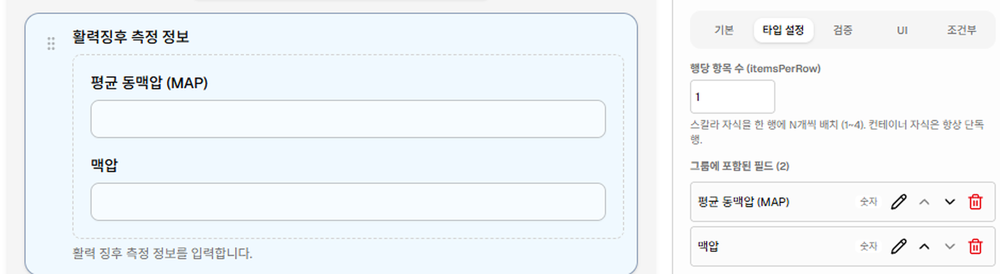
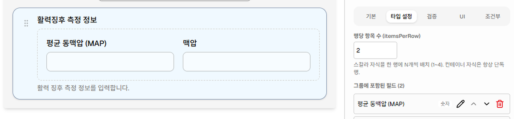
행당 항목 수 (itemsPerRow) — 숫자를 직접 입력합니다. 1보다 작거나 4보다 큰 값은 자동으로 범위 안으로 맞춰집니다.
1 이면 「평균 동맥압 (MAP)」 과 「맥압」 이 위아래로 놓이고, 2 면 좌우로 나란히 놓입니다. 상자 하나가 차지하는 세로 길이가 그만큼 줄어듭니다.
유의사항
필수 확인 데이터 손상 · 폼 완료 불가
- • ⛔ 3 · 4 는 신중히 쓰십시오. 한 행에 넷을 넣으면 각 칸이 좁아져 긴 표시명이 잘립니다 — 레이아웃 너비5.2와 함께 확인하십시오.
오해하기 쉬운 동작
- • 함께 읽어야 하는 항목은 같은 행에 두십시오. 수축기 · 이완기 혈압처럼 짝으로 해석하는 값은 나란히 있어야 기록자가 잘못 적은 것을 알아챕니다.
- • 표 · 다른 그룹을 멤버로 넣으면 이 설정이 무시됩니다. 화면 안내와 같이 “컨테이너 자식은 항상 단독 행” 이라, 그 멤버만 한 줄을 통째로 씁니다. 3.1
참고
- • 값을 비우면 1로 돌아갑니다. 세로로 쌓는 것이 기본 배치입니다.
검증 탭 — 저장 전 값 검사
- 4.1검증 규칙이 없는 상태
- 4.2규칙 추가
- 4.3규칙 작성 완료 — 다른 필드와 비교
4.1검증 규칙이 없는 상태
개요
저장하기 전에 값이 조건에 맞는지 검사하는 규칙을 모아 두는 탭입니다. ⚠ 여기는 그룹 자신에 거는 규칙이고, 그룹에는 값이 없습니다 — 그래서 쓸 수 있는 규칙이 사실상 한 종류뿐입니다4.3. 멤버 각자의 값을 검사하는 규칙은 그 멤버의 검증 탭에서 만드십시오. 3.3
화면 설명
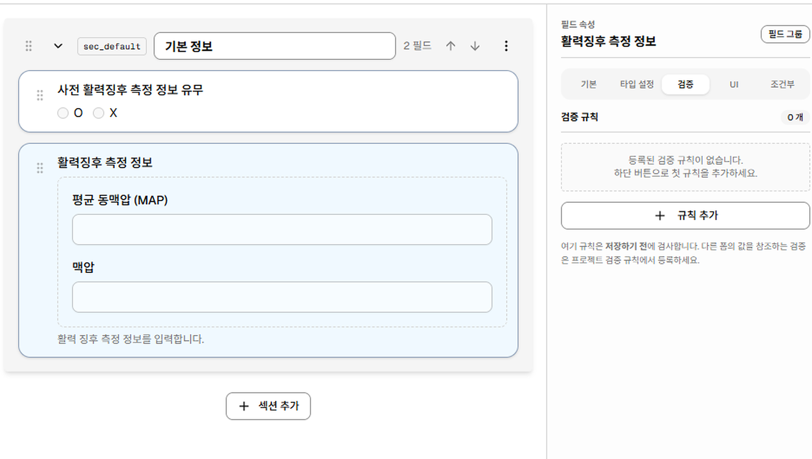
[+ 규칙 추가] — 첫 규칙을 생성합니다. 선택한 뒤의 화면은 4.2 에서 설명합니다.
검증 규칙 영역과 등록된 규칙 수입니다. 처음에는 0 개 입니다.
규칙이 없으면 “등록된 검증 규칙이 없습니다. 하단 버튼으로 첫 규칙을 추가하세요.” 안내가 표시됩니다.
하단 안내 — “여기 규칙은 저장하기 전에 검사합니다. 다른 폼의 값을 참조하는 검증은 프로젝트 검증 규칙에서 등록하세요.”
유의사항
필수 확인 데이터 손상 · 폼 완료 불가
- • ⛔ 멤버의 값 검사는 멤버에서 하십시오. 「평균 동맥압은 40~200 이어야 한다」 같은 규칙은 그 멤버의 검증 탭에 거는 것이고, 여기 그룹 탭에 걸면 엉뚱한 대상(값 없는 묶음)을 검사하게 됩니다. 3.3
- • ⛔ 다른 폼의 값을 참조하는 검증은 여기서 만들 수 없습니다. 그런 규칙은 「프로젝트 검증 규칙」 화면에서 등록하십시오 — 다만 그 화면에서 고를 수 있는 것은 멤버이고 그룹 자신은 아닙니다. 7.2
오해하기 쉬운 동작
- • 멤버끼리 비교하는 규칙은 멤버 쪽에서 만들 수 있습니다. 그룹 멤버는 최상위 필드로 취급되므로, 한 멤버의 검증 탭에서 다른 멤버를 비교 항목으로 고를 수 있습니다. 4.3
- • 캡처에는 최상위 필드가 둘입니다. 「사전 활력징후 측정 정보 유무」(단일 선택) 와 「활력징후 측정 정보」(그룹) — 앞 필드의 답에 따라 그룹을 받을지가 갈리는 관계라, 4.3 에서 두 필드를 묶는 규칙을 만듭니다.
4.2규칙 추가
개요
4.1 의 [+ 규칙 추가] 를 선택하면 규칙 1 블록이 생성됩니다. 처음에는 「값 범위」 가 잡혀 있는데, 그룹에는 비교할 값 자체가 없습니다. 「다른 필드와 비교」 로 바꾸십시오 — 그룹에서 쓸 수 있는 유일한 종류입니다. 4.3
화면 설명
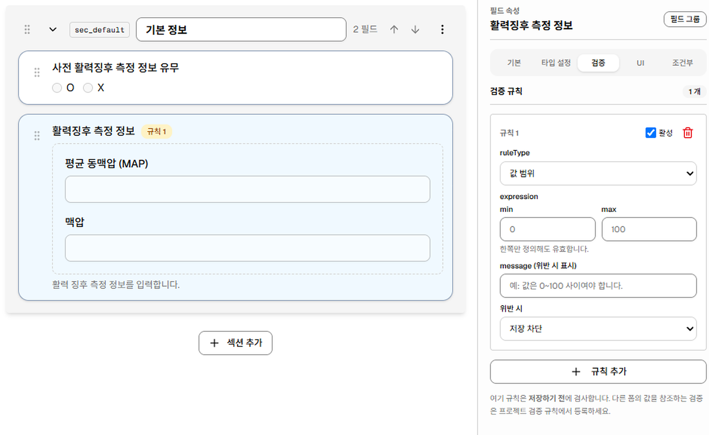
[+ 규칙 추가] — 규칙을 하나 더 생성합니다. (4.1 에서 선택한 것과 같은 버튼입니다.)
캔버스 상자 제목 옆에 「규칙 1」 배지가 표시됩니다.
규칙 수가 1 개 로 변경됩니다.
활성 체크박스와 삭제 아이콘 — 규칙을 지우지 않고 잠시 중단할 수 있습니다.
ruleType — 규칙의 종류입니다. 생성 직후에는 「값 범위」 이므로 반드시 「다른 필드와 비교」 로 변경하십시오.
min — 값 범위를 골랐을 때 나타나는 하한 칸입니다.
max — 같은 조건에서 나타나는 상한 칸입니다.
message (위반 시 표시) — 규칙을 위반했을 때 사용자에게 표시할 문구입니다.
위반 시 — 저장 차단 또는 경고 중에서 선택합니다. (ruleType 에 따라 고를 수 없게 되기도 합니다 — 4.3)
흐린 글씨 0 · 100 과 “한쪽만 정의해도 유효합니다.” 는 값 범위에 대한 안내이며 설정된 값이 아닙니다.
유의사항
필수 확인 데이터 손상 · 폼 완료 불가
- • ⛔ 혈압 범위를 여기에 걸지 마십시오. min · max 는 그룹 자신의 값을 보는데 그룹에는 값이 없어 아무 일도 일어나지 않습니다 — 오류도 내지 않으므로 규칙을 걸었다고 믿은 채 넘어가게 됩니다. 범위는 그 멤버에 거십시오. 4.1
- • ⛔ 「형식 (정규식)」 을 그룹에 걸면 저장이 끝까지 막힙니다. 정규식은 묶음을 고정된 내부 문자열로 바꾼 뒤 검사하므로, 어떤 식을 걸어도 항상 위반이 되어 기록자가 폼을 저장할 방법이 없어집니다.
- • ⛔ 「소수 자릿수」 도 동작하지 않습니다. 같은 이유입니다 — 소수 자릿수는 숫자 멤버에 거십시오. 4.1
- • message 를 공란으로 두면 사용자는 차단된 이유를 알 수 없습니다. 반드시 입력하십시오.
4.3규칙 작성 완료 — 다른 필드와 비교
개요
ruleType 을 다른 필드와 비교 로 바꾸면 같은 폼의 다른 필드 값과 견주어 검사합니다. 그룹에는 값이 없으므로 이 규칙만이 뜻을 가집니다 — 비교 대상이 그룹 자신이 아니라 다른 필드이기 때문입니다. ⚠ 화면 안내의 항목 수를 눈여겨보십시오 — 거기에 이 타입의 성질이 드러납니다.
화면 설명
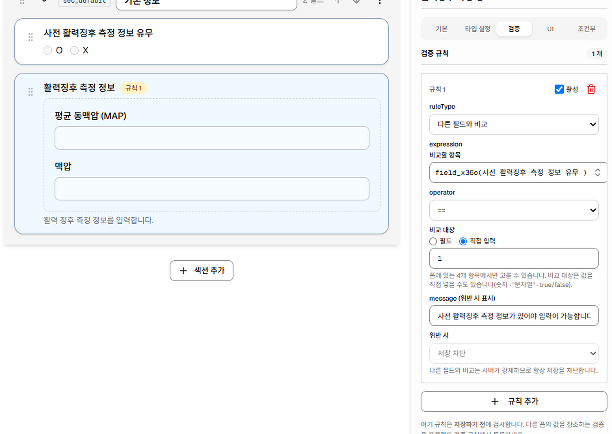
1 일 때만 저장되도록 설정한 상태ruleType = 다른 필드와 비교 — 선택하면 아래 칸이 비교용으로 바뀝니다.
비교할 항목 — 캡처는 field_x36o(사전 활력징후 측정 정보 유무) 입니다. ⚠ 그룹 자신을 고르면 안 됩니다.
operator — 비교 방법입니다. 캡처는 ==(같음) 입니다.
비교 대상 — 필드 와 직접 입력 중에서 선택합니다. 캡처는 직접 입력으로 1 을 넣었습니다 — 「사전 활력징후 측정 정보 유무」 의 저장값 입니다.
message (위반 시 표시) — 캡처는 사전 활력징후 측정 정보가 있어야 입력이 가능합니다. 입니다.
위반 시 — 회색으로 비활성입니다. 화면 안내와 같이 “다른 필드와 비교는 서버가 강제하므로 항상 저장을 차단합니다.”
화면 안내 — “폼에 있는 4개 항목에서만 고를 수 있습니다.” ⚠ 최상위 필드는 둘(사전 유무 · 그룹)뿐인데 4개입니다 — 그룹 멤버 둘이 후보에 함께 들어 있기 때문입니다. 7.1
유의사항
필수 확인 데이터 손상 · 폼 완료 불가
- • ⛔ 비교할 항목으로 그룹 자신을 고르지 마십시오. 그룹에는 값이 없어
1과 결코 같아질 수 없고, 멤버를 하나라도 채우는 순간 위반이 되어 저장이 끝까지 막힙니다. - • ⛔ 비교 대상에는 화면 문구가 아니라 저장값을 넣습니다. 「사전 활력징후 측정 정보 유무」 는 화면에
O·X로 보이므로 저장값이 정말1인지 그 필드의 선택지 목록에서 먼저 확인하십시오. - • 같은 관계를 조건부 표시6.2로도 만들 수 있습니다. 둘 다 걸면 묻지도 않으면서 저장도 막는 중복이 되므로 한쪽만 사용하십시오 — 그룹에서는 조건부 표시 쪽을 권합니다. 6.1
오해하기 쉬운 동작
- • 그룹 멤버는 목록에 그대로 나옵니다. 멤버가 최상위 필드로 취급되기 때문이며, 그래서 「평균 동맥압이 입력되어 있으면 …」 같은 규칙을 다른 필드에서 걸 수 있습니다. 표(테이블형)의 컬럼은 목록에 나오지 않아 이것이 불가능합니다. 3.3
UI 탭 — 화면 배치와 안내 문구
- 5.1UI 탭 전체 구성
- 5.2레이아웃 너비
- 5.3읽기 전용 · 숨김
- 5.4placeholder · helpText
5.1전체 구성
개요
값 자체가 아니라 화면에 어떻게 배치하고 어떻게 안내할지를 정하는 탭입니다. 이 탭의 설정은 저장되는 데이터 자체를 변경하지 않습니다. ⚠ 다섯 항목 가운데 placeholder 는 그룹에서 동작하지 않습니다 — 그룹에는 글자를 넣을 입력란이 없기 때문입니다. 5.4
화면 설명
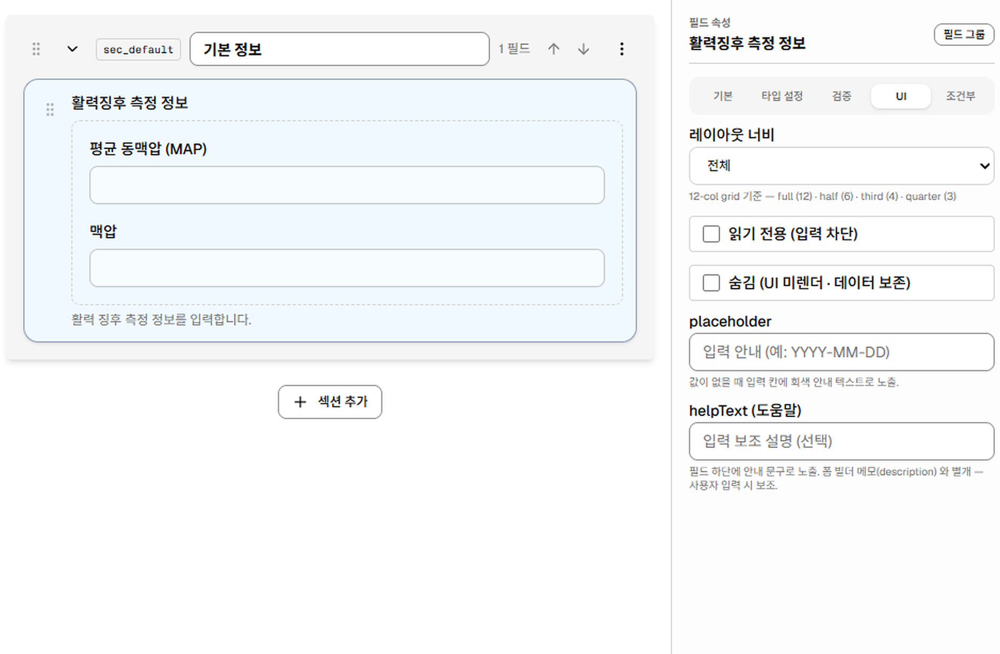
레이아웃 너비 — 폼 한 줄에서 이 상자가 차지할 폭입니다. 행당 항목 수3.4와 함께 상자 안의 배치를 결정합니다. 5.2
읽기 전용 (입력 차단) — 보여 주되 바꾸지 못하게 합니다. 멤버가 한꺼번에 잠깁니다. 5.3
숨김 (UI 미렌더 · 데이터 보존) — 화면에서 감춥니다. 상자와 멤버가 함께 사라집니다. 5.3
placeholder — 그룹에서는 적용되지 않습니다. 멤버 입력란의 안내 문구는 각 멤버의 UI 탭에서 정합니다. 5.4
helpText (도움말) — 상자 아래에 표시할 안내 문구입니다. 이쪽은 정상 동작합니다. 5.4
타입 배지 「필드 그룹」
유의사항
필수 확인 데이터 손상 · 폼 완료 불가
- • ⛔ placeholder 에 입력해도 화면이 바뀌지 않습니다. 그룹은 입력란이 아니라 멤버를 담는 상자라 글자를 넣을 자리가 없습니다 — 칸 안의 안내가 필요하면 그 멤버의 UI 탭에 적으십시오. 5.4
- • ⛔ 숨김은 저장된 값을 지우지 않습니다. 화면에서만 감춰지고 멤버의 값은 그대로 남아 추출과 감사 추적에 포함됩니다. 5.3
오해하기 쉬운 동작
- • 이 탭의 설정은 저장된 값을 바꾸지 않습니다. 배치와 안내만 달라집니다.
참고
- • 읽기 전용과 숨김을 함께 사용하지 마십시오. 숨김이 우선 적용되어 읽기 전용 설정은 효과가 없습니다. 5.3
5.2레이아웃 너비
개요
폼 한 줄에서 이 상자가 차지할 폭을 정합니다. ⚠ 그룹에서는 이 설정이 행당 항목 수3.4와 곱해집니다 — 절반 폭에 행당 2개를 두면 각 멤버는 전체 폭의 1/4만 쓰게 됩니다. 두 설정을 따로 보지 말고 함께 확인하십시오.
화면 설명
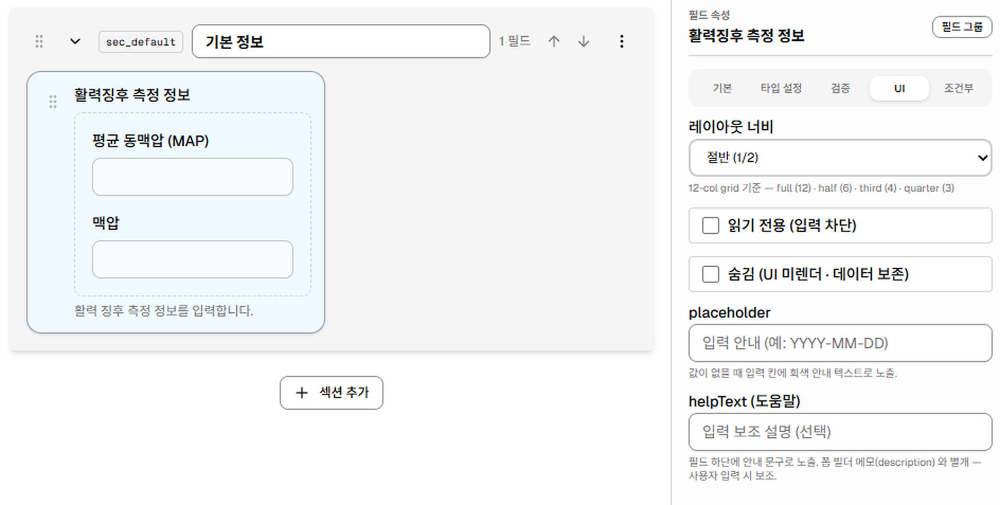
레이아웃 너비 — 전체 · 절반 (1/2) · 1/3 · 1/4 중에서 선택합니다.
상자 전체가 절반 폭으로 줄어듭니다. 안의 멤버도 함께 좁아지고, 같은 줄의 남은 자리에 다른 필드가 배치됩니다.
12-col grid 기준 — 화면 안내와 같이 “full (12) · half (6) · third (4) · quarter (3)” 입니다.
유의사항
필수 확인 데이터 손상 · 폼 완료 불가
- • ⛔ 좁은 폭과 많은 행당 항목 수를 함께 쓰지 마십시오. 절반 폭 × 행당 4개면 각 칸이 전체의 1/8 이 되어 표시명도 값도 읽을 수 없게 됩니다. 3.4
오해하기 쉬운 동작
- • 멤버가 둘 이상이면 전체 폭을 권합니다. 그룹은 상자 테두리와 제목이 자리를 더 쓰므로 같은 폭이어도 낱개 필드보다 좁게 느껴집니다.
- • 멤버 하나짜리 그룹이라면 폭을 줄여도 됩니다. 다만 그런 경우에는 그룹으로 묶을 이유가 있는지 먼저 생각해 보십시오. 1.1
참고
- • 지정하지 않으면 전체 폭이 적용됩니다.
5.3읽기 전용 · 숨김
개요
상자를 보여 주되 바꾸지 못하게 하거나, 화면에서 감추되 값은 보존하는 설정입니다. 둘 다 저장된 값을 삭제하지 않으며, 상자 안의 멤버 전부에 적용됩니다 — 일부 멤버만 잠그거나 감추려면 그 멤버의 UI 탭에서 따로 지정해야 합니다.
화면 설명
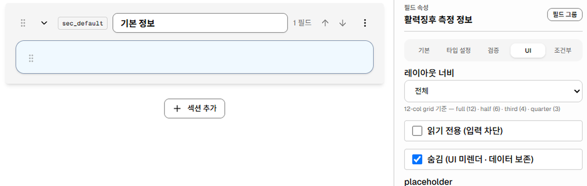
읽기 전용 (입력 차단) — 선택하면 멤버가 표시되지만 기록자가 고칠 수 없습니다. 상자 안이 전부 잠깁니다.
숨김 (UI 미렌더 · 데이터 보존) — 선택하면 입력 화면에서 이 상자가 표시되지 않습니다.
캔버스 카드가 빈 테두리만 남습니다. 제목도 멤버도 모두 표시되지 않습니다.
레이아웃 너비 — 5.2 에서 설정한 값입니다.
유의사항
필수 확인 데이터 손상 · 폼 완료 불가
- • ⛔ 숨김으로 감춘 멤버의 값은 그대로 남습니다. 추출과 감사 추적에 포함되므로, 보관해서는 안 되는 값이라면 감추는 것이 아니라 값을 지워야 합니다. 4.3
- • ⛔ 필수 멤버를 숨기면 폼이 완료되지 않을 수 있습니다. 이 탭의 숨김은 조건부 표시와 달라 필수 검사를 면제하지 않습니다 — 조건에 따라 감추려면 조건부 표시를 쓰십시오. 2.2 · 6.1
오해하기 쉬운 동작
- • 읽기 전용은 다른 곳에서 가져온 값에 사용하십시오. 기록자가 직접 받아 적어야 하는 묶음에는 사용하지 마십시오.
참고
- • 숨김과 읽기 전용을 함께 선택하면 숨김이 우선 적용됩니다.
5.4placeholder · helpText
개요
상자 안과 아래에 들어갈 안내 문구를 정합니다. 그룹에서는 두 항목의 운명이 갈립니다 — helpText 는 상자 아래에 정상 표시되지만, placeholder 는 아무 데도 쓰이지 않습니다. 그룹은 입력란이 아니라 멤버를 담는 상자이기 때문입니다.
화면 설명
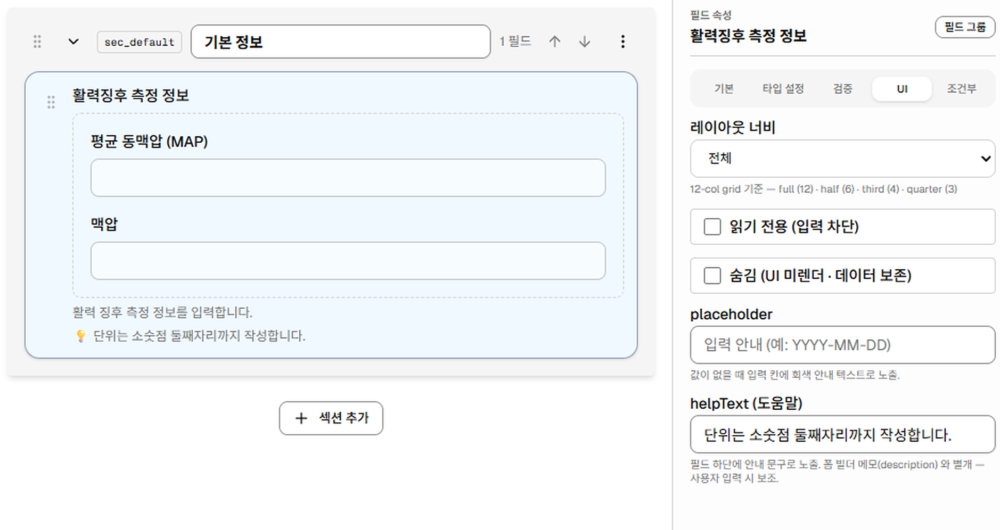
placeholder — 값이 없을 때 입력란에 표시할 흐린 글씨입니다. 그룹에는 적용되지 않습니다.
멤버 입력란은 각 멤버 자신의 설정을 따릅니다 — 캡처의 두 칸이 비어 있는 것은 그 멤버들에 placeholder 를 지정하지 않았기 때문이며, 여기에 무엇을 입력해도 채워지지 않습니다. 5.1
helpText (도움말) — 상자 아래에 표시할 안내 문구입니다. 캡처는 “단위는 소숫점 둘째자리까지 작성합니다.” 입니다.
상자 아래에 💡 아이콘과 함께 표시됩니다. 이쪽은 정상 동작합니다.
description (도움말) — 2.1 에서 입력한 문구입니다. helpText 와 다른 항목이며 아이콘 없이 윗줄에 표시됩니다.
유의사항
필수 확인 데이터 손상 · 폼 완료 불가
- • ⛔ placeholder 에 적은 문구는 어디에도 표시되지 않습니다. 칸 안의 안내가 필요하면 ✏ 로 그 멤버에 들어가 거기에서 지정하십시오. 3.3 · 5.1
- • ⛔ 특정 멤버에만 해당하는 내용을 helpText 에 적지 마십시오. 상자 전체에 붙는 문구라 다른 멤버에도 적용되는 것으로 오해됩니다. 2.1
오해하기 쉬운 동작
- • 멤버 전체에 걸리는 규칙은 helpText 에 적으십시오. 캡처처럼 “단위는 소숫점 둘째자리까지 작성합니다.” 라고 적으면 상자 안 모든 칸에 해당하는 안내로 읽힙니다.
- • description 과 helpText 는 함께 표시됩니다. 둘 다 입력하면 두 줄이 되므로 같은 내용을 두 번 적지 마십시오. 2.1
조건부 탭 — 다른 값에 따라 표시하기
- 6.1조건부 표시 활성
- 6.2조건 설정
6.1조건부 표시 활성
개요
다른 필드의 값에 따라 이 상자를 표시하거나 감추는 기능입니다. 그룹에서 특히 강력한 기능입니다 — 조건 하나로 상자 안 멤버 전부가 함께 나타나고 사라지기 때문입니다. 멤버마다 같은 조건을 되풀이해 걸 필요가 없습니다.
화면 설명
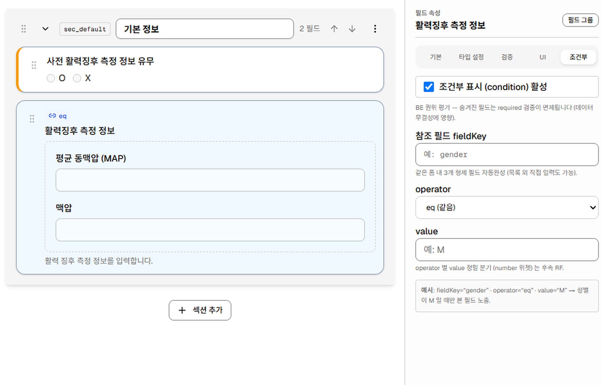
조건부 표시 (condition) 활성 — 선택하면 아래 조건 설정이 표시됩니다.
캔버스 상자 위에 🔗 eq 배지가 표시되어 조건이 적용되었음을 알립니다.
참조 필드 fieldKey — 조건의 기준이 되는 같은 폼 안의 다른 필드입니다. ⚠ 화면 안내가 “같은 폼 내 3개 형제 필드 자동완성” 이라고 밝히듯, 그룹 멤버도 후보에 포함됩니다. 4.3
operator — 비교 방법입니다. 기본값은 eq (같음) 입니다.
value — 비교할 값입니다. 참조 필드의 저장값을 입력합니다. 6.2
⚠ 화면 안내 — “숨겨진 필드는 required 검증이 면제됩니다 (데이터 무결성에 영향).” 조건 판정은 시스템이 수행합니다.
하단 예시 — fieldKey="gender" · operator="eq" · value="M" → 성별이 M 일 때만 본 필드 노출.
유의사항
필수 확인 데이터 손상 · 폼 완료 불가
- • ⛔ 멤버에 따로 건 조건은 그룹 조건과 함께 적용됩니다. 그룹이 보여도 멤버 자신의 조건이 거짓이면 그 멤버는 계속 숨습니다 — 두 조건을 겹쳐 걸면 왜 안 보이는지 추적하기 어려워집니다.
- • ⛔ 이미 입력한 뒤에 조건이 거짓이 되면 상자가 화면에서 사라집니다. 멤버의 값은 그대로 남으므로, 앞 질문의 답을 나중에 바꾼 경우 남아 있는 값을 따로 지워야 합니다. 5.3
오해하기 쉬운 동작
- • 조건은 멤버에게도 함께 적용됩니다. 그룹이 숨으면 안의 멤버도 모두 숨고 필수 검사에서 제외됩니다 — 그래서 묶어 두면 조건을 한 번만 걸면 됩니다. 2.2
참고
- • 조건을 활성화하고 참조 필드를 공란으로 두면 조건이 성립하지 않습니다. 반드시 ②~④를 모두 입력하십시오. 6.2
6.2조건 설정
개요
6.1 에서 활성화한 조건을 끝까지 입력한 상태입니다. 이 설정이면 「사전 활력징후 측정 정보 유무」 의 값이 1 일 때만 상자가 화면에 표시되고, 안의 두 멤버도 함께 나타납니다. 4.3 의 검증 규칙과 같은 참조 필드를 쓰되, 저장을 막는 대신 아예 묻지 않는 쪽입니다.
화면 설명
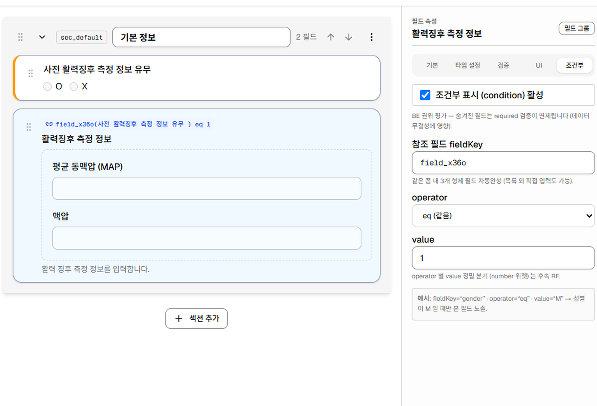
사전 활력징후 측정 정보 유무 가 1 일 때만 표시되도록 설정한 상태참조 필드 fieldKey = field_x36o — 같은 폼의 「사전 활력징후 측정 정보 유무」 필드를 가리킵니다. 4.3 의 검증 규칙과 같은 필드입니다.
①~③을 모두 입력한 결과 — 캔버스 배지가 🔗 field_x36o(사전 활력징후 측정 정보 유무) eq 1 로 구체화됩니다.
operator = eq (같음)
value = 1 — 화면에 보이는 O 가 아니라 그 선택지의 저장값을 입력합니다.
⚠ 화면 안내 — “숨겨진 필드는 required 검증이 면제됩니다 (데이터 무결성에 영향).”
하단 예시 — fieldKey="gender" · operator="eq" · value="M" → 성별이 M 일 때만 본 필드 노출.
유의사항
필수 확인 데이터 손상 · 폼 완료 불가
- • ⛔ value 에는 화면 문구가 아니라 저장값을 입력합니다. 참조 필드가 화면에
O·X로 보인다고O라고 적으면 조건이 성립하지 않아 상자가 끝까지 표시되지 않습니다. 참조할 필드의 선택지 목록에서 저장값을 먼저 확인하십시오. - • ⛔ 참조 필드의 저장값을 바꾸면 조건이 조용히 깨집니다. 저장값을
1에서Y로 바꾸면 이 조건은 오류 없이 그냥 성립하지 않게 됩니다 — 그래서 발행 후 저장값 변경이 위험합니다. - • ⛔ 그룹 멤버를 참조 필드로 쓸 때 주의하십시오. 멤버는 후보에 나오지만, 자기 그룹의 멤버를 자기 그룹의 조건으로 쓰면 그룹이 숨는 순간 그 멤버도 숨어 조건을 되돌릴 수 없게 됩니다. 6.1
오해하기 쉬운 동작
- • 설정한 뒤 미리보기로 확인하십시오. 기준 값을 바꿔 가며 상자와 멤버가 실제로 나타나고 사라지는지 확인해야 합니다.
부록
- 7.1탭별 설정 항목 한눈에 보기
- 7.2반드시 기억할 것 · 다루지 않은 것
7.1탭별 설정 항목 한눈에 보기
탭별 설정 항목
| 탭 | 항목 | 무엇을 정하는가 | 본문 |
|---|---|---|---|
| 기본 | fieldKey | 그룹의 키 — ⚠ 값은 저장되지 않는다(멤버의 키에 저장) | 2.1 |
| label (표시명) | 상자 제목 — 묶음의 기준이 드러나게 | 2.1 | |
| description (도움말) | 상자 아래 보조 설명 — 멤버 전체에 해당하는 내용만 | 2.1 | |
| 필수 입력 | 멤버 중 하나라도 채워야 하는지 — ⚠ 멤버 필수와 독립 | 2.2 | |
| SDV 검증 대상 | ⚠ 그룹이 아니라 멤버에 지정할 것(그룹엔 대조할 값이 없다) | 2.3 | |
| 타입 설정 | 행당 항목 수 (itemsPerRow) | 한 행에 멤버 몇 개 (1~4 · 기본 1) — 컨테이너 멤버는 무시 | 3.1 · 3.4 |
| 그룹에 필드 추가 | 폼의 필드를 골라 그룹으로 이동 — 새로 만드는 것이 아니다 | 3.2 · 3.3 | |
| 멤버 목록 (✏ ∧∨ 🗑) | 멤버 속성으로 이동 · 순서 변경 · ⚠ 🗑 = 빼기(삭제 아님) | 3.3 | |
| 검증 | ruleType | 「다른 필드와 비교」 만 뜻을 가진다 | 4.2 · 4.3 |
| 값 범위 · 형식 · 소수 자릿수 | ⛔ 그룹에 걸지 말 것 — 무력하거나 저장을 막는다. 멤버에 걸 것 | 4.2 | |
| 비교할 항목 | ⛔ 그룹 자신을 고르면 저장이 차단된다 · 멤버는 후보에 나온다 | 4.3 | |
| message · 위반 시 | 위반 문구(공란 금지) · 다른 필드와 비교는 저장 차단 고정 | 4.2 · 4.3 | |
| UI | 레이아웃 너비 | 상자의 폭 — ⚠ 행당 항목 수와 곱해진다 | 5.2 |
| 읽기 전용 | 보여 주되 고치지 못하게 — 멤버 전부 | 5.3 | |
| 숨김 | 화면 미표시 — 멤버 전부 · 값은 남고 필수는 면제되지 않는다 | 5.3 | |
| placeholder · helpText | ⛔ placeholder 는 적용되지 않는다 · helpText 만 동작 | 5.4 | |
| 조건부 | 조건 활성 | 조건 하나로 멤버 전부가 함께 표시·은닉 (필수 검증 면제) | 6.1 |
| 참조 필드 fieldKey | 조건의 기준 — 그룹 멤버도 후보에 포함 | 6.2 | |
| operator · value | 비교 방법과 비교할 값 (저장값을 입력) | 6.2 |
필드 그룹과 테이블형 — 비슷해 보이지만 반대다
| 항목 | 테이블형 (GRID) | 필드 그룹 (GROUP) |
|---|---|---|
| 무엇을 모으는가 | 같은 항목을 여러 건 (행이 늘어난다) | 다른 항목을 한 묶음 (항목 수는 고정) |
| 하위 항목 저작 | 컬럼을 새로 만든다 | 폼의 필드를 골라 옮긴다 — 최상위 필드 수가 줄어든다 3.3 |
| 하위 항목의 신분 | 표 안에만 있는 컬럼 | 여전히 최상위 필드 — 자기 키·필수·검증을 그대로 가진다 |
| 검증·조건부 참조 | 컬럼은 참조 불가 | 멤버를 직접 참조할 수 있다 (4.3 안내의 “4개 항목”) |
| 하위 필수의 작동 | 컬럼 필수가 표 전체를 집계 대상으로 끌어올린다 | 멤버 필수는 멤버 자신의 몫 — 그룹 필수와 독립 2.2 |
| 행/항목 수 | 기록자가 [행 추가] 로 늘린다 | 저작자가 정한 멤버 수 고정 — 기록자가 늘릴 수 없다 |
7.2반드시 기억할 것 · 다루지 않은 것
반드시 기억할 것
필수 확인 데이터 손상 · 폼 완료 불가
- • 그룹은 값을 담지 않습니다. 값 검사(범위·형식)·SDV·기본값은 전부 멤버에 지정하십시오. 그룹에 걸면 무력하거나 저장을 막습니다. 2.3 · 4.2
- • 🗑 는 삭제가 아니라 「그룹에서 빼기」 입니다. 필드도 값도 사라지지 않고 최상위로 되돌아갑니다. 3.3
- • 검증 탭의 「비교할 항목」 으로 그룹 자신을 고르지 마십시오. 멤버를 하나라도 채우는 순간 위반이 되어 저장이 영구 차단됩니다. 4.3
- • 그룹 필수와 멤버 필수는 독립입니다. 그룹을 필수로 두어도 멤버 하나만 채우면 충족되고, 그룹 필수를 꺼도 멤버 필수는 그대로 살아 있습니다. 2.2
- • placeholder 는 적용되지 않습니다. 칸 안의 안내는 ✏ 로 그 멤버에 들어가 지정하십시오. 5.4
- • UI 탭의 숨김은 필수를 면제하지 않습니다. 조건에 따라 감추려면 반드시 조건부 표시를 쓰십시오. 5.3 · 6.1
- • 좁은 폭과 많은 행당 항목 수를 겹치지 마십시오. 두 설정이 곱해져 칸이 지나치게 좁아집니다. 3.4 · 5.2
오해하기 쉬운 동작
- • 멤버는 여전히 최상위 필드입니다. 그래서 검증 규칙과 조건부에서 직접 참조할 수 있습니다 — 표의 컬럼과 결정적으로 다릅니다. 3.3 · 4.3
- • 조건은 한 번만 걸면 됩니다. 그룹이 숨으면 멤버도 함께 숨습니다. 6.1
- • 묶을 필드를 먼저 만드십시오. 그룹만 만들어 두면 넣을 것이 없어 아무것도 할 수 없습니다. 3.1
참고
- • 캔버스 왼쪽의 주황색 막대는 “저장 전 변경됨” 표시입니다. 그룹과 무관하며 저장하면 사라집니다. 1.1
이 문서에서 다루지 않은 것
※ 미측정 선언 허용 — 기본 탭에 항목 자체가 표시되지 않습니다. 그룹은 값을 담지 않아 “확인할 수 없음” 을 선언할 대상이 없기 때문입니다. 필요하면 멤버에 켜십시오. 1.1
AE 의미 역할 — 기본 탭에 항목 자체가 표시되지 않습니다. 이상사례 역할은 예/아니오 또는 단일 선택 필드에 지정하는 것이며, 묶음에는 지정할 수 없습니다. 1.1
기본값 (defaultValue) · 자동 계산 (calculation) — 타입 설정 탭에 항목이 없습니다. 둘 다 값을 다루는 기능이라 멤버에 지정하십시오. 3.1
접기 · 펼치기 — 상자를 접어 두는 설정은 저작 화면에 제공되지 않습니다. 상자는 항상 펼쳐진 상태로 표시됩니다.
멤버 여러 개를 한 번에 추가 — 피커는 한 번에 하나씩만 고를 수 있습니다. 멤버 수만큼 「고르기 → [추가]」 를 반복하십시오. 3.2
표(테이블형)의 컬럼을 그룹에 넣기 — 컬럼은 표 안에만 있는 항목이라 피커 목록에 나오지 않습니다. 그룹으로 묶을 수 있는 것은 최상위 필드뿐입니다. 3.2
그룹 중첩의 한도 — 그룹 안에 그룹을 넣을 수 있으나 3중까지입니다. 한도를 넘는 후보는 피커에서 비활성으로 표시되고 사유가 함께 나옵니다. 3.1 · 3.2
프로젝트 검증 규칙에서의 참조 — 다른 폼의 값을 보는 「프로젝트 검증 규칙」 화면에서는 그룹 자신을 고를 수 없습니다. 그룹의 키에는 값이 실리지 않기 때문이며, 멤버는 고를 수 있습니다. 4.1